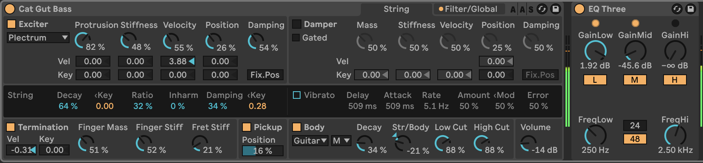

(The first clip is the song before mixing, the second one is after mixing).
For this mixing assignment, I decided to work on one of the songs that I'm writing for the B31 songwriting class (unfortunately, due to technical and timely issues, I was unable to effectively record the vocals for this week; The vocal track will be included for that assignment). This song only contains a guitar with chorus and flanger from a physical guitar pedal, along with bass and drums sounds from Ableton Live 12.

Considering that I will soon be adding vocals to the project, I first
made sure to decrease the instrument volumes accordingly in order to provide
some "dynamic space" for the vocals. Everything was lowered down except for
the bass (due to personal preference). I also panned the drum kit
and percussion kit left and right, respectively, taking inspiration
from a psychedelic Peruvian cumbia track that mixed its percusion this way.
Next up was the bass; just as with the previous mxing assignment, I wanted to get rid of
the bass high end for personal preference. I used the EQ insted of the low-pass filter,
although I have to admit that I am not too sure what the difference between the two effects
would be (besides from the function curves used in an LPF and in a graphic EQ); I lowered the
highs and the mids significantly and brought up the low end to get a more 'muffled' texture.
Although I had already panned the percussion and drum kits, I wanted to experiment with
panning the guitar. The flanger effect had such an immediate presence in the song that
I wanted to see if I could enhance the 'trippiness' of it even more (I'm finding myself
using that term a lot), so I automated the flanger to only go off during the second and
third sections of each song. Since these two sections in particular feel ominous already,
these seemed like the perfect sections in which to automate the panning.
My last major changes involved automating low-pass filters on the drum kit and percussion kit.
Since the first section of the song repreats for about sixteen bars, I wanted the first eight,
to serve as an introduction to the song (as if played through a cheap audio speaker, sort of).
This is why I decided to use low-pass filters for only those first eight bars, and they don't
return for the rest of the song.
In the case of the drum kit, however, I wanted to get more of a punch out of the snare
(and kick drum as well, although that wasn't the overarching focus) so I added compression
to the entire track. I lowered the release a bit to get a tad extra punchiness, which to me
felt like the only small thing the drum track needed.